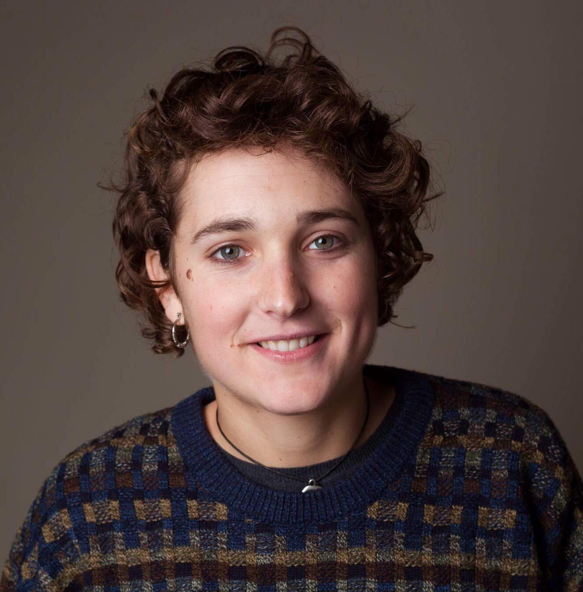

PhD Artificial Intelligence and Machine Learning. Complex systems researcher. Physicist. (she/her/hers)

I am an AI and machine learning researcher at the University of Cambridge, originally from Barcelona. With a theoretical physics and mathematics background, my research combines complex systems, mathematical networks and deep learning. I work on problems at the interesction between physics, dynamical systems and machine learning, aiming towards interpretable models and to develop a solid mathematical framework for Artificial Intelligence. Currently focusing on unsupervised generative models and graph neural networks.
I work as a research associate in the AI group at the Department of Computer Science and Technology, with Pietro Lio and Mateja Jamnik . Also a member of The Mark Foundation Institute for Integrated Cancer Medicine , and Honorary Clinical Research Fellow at Moorfields Eye Hospital in London. We develop supervised and unsupervised models to combine different data modalities for better cancer diagnosis, prediction and treatment.
Active member of the Trinity College PostDoc Society , proud alumna of Newnham College and part of Women@CL . I supervise Part II and III (MSc) projects in Physics and Computer Science at the University of Cambridge, and I am also a Machine Learning teaching fellow at Cambridge Spark .
Ultimate frisbee athlete, competing both at National and International level. If not in my office, you will probably find me cycling, running or doing some other sort of outdoors activity.